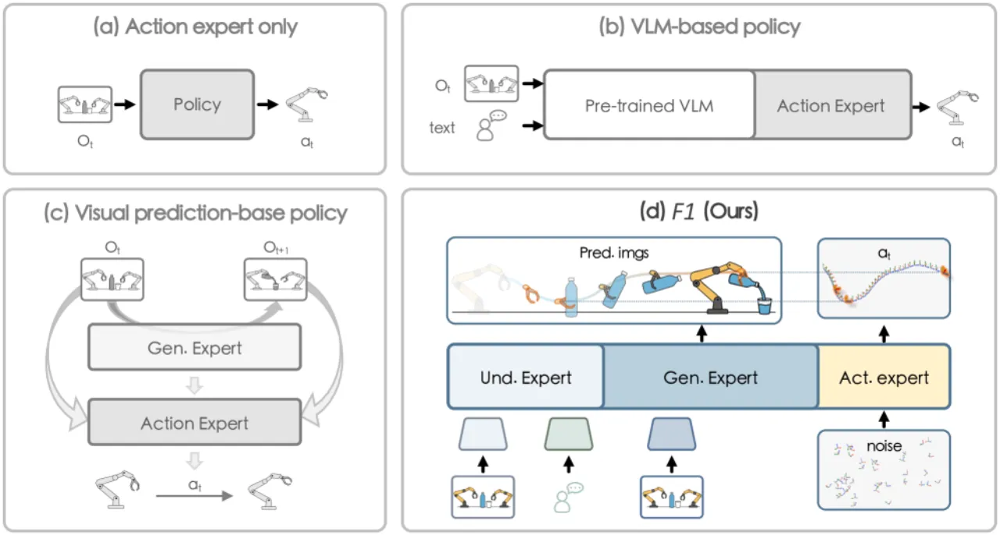
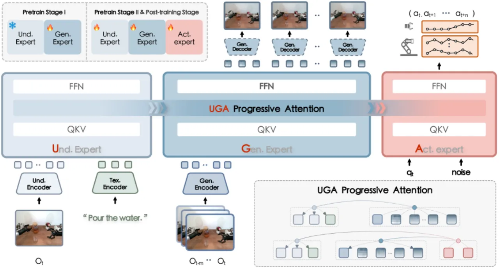
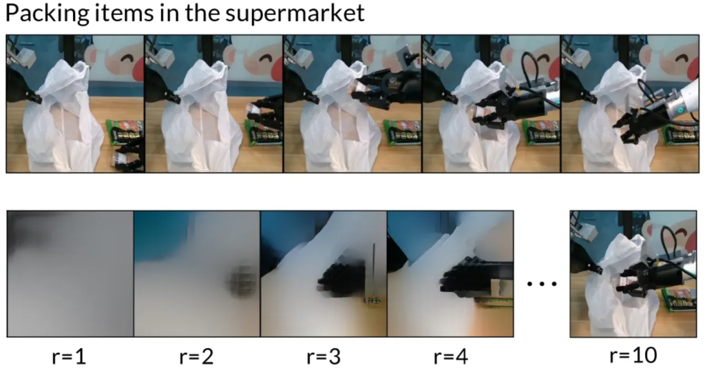
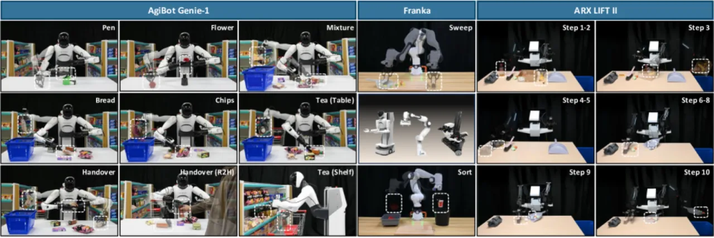
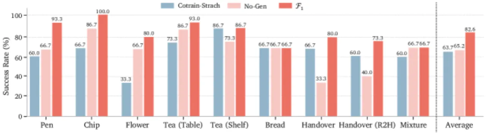
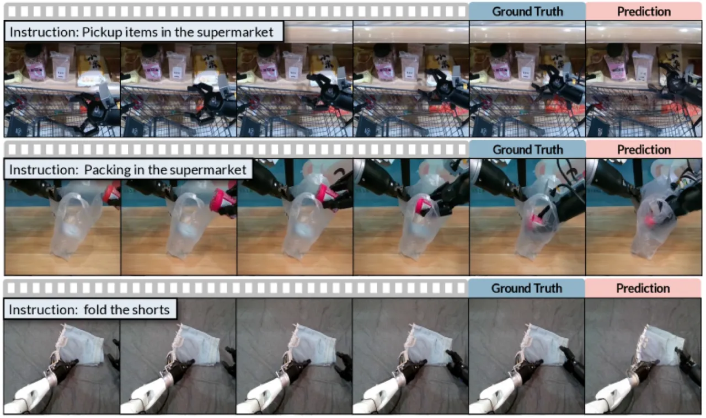

F₁ 提出将视觉前瞻生成（visual foresight generation）引入 VLA 决策框架，利用 Mixture-of-Transformer (MoT) 架构中的三类专家（understanding / generation / action）实现"预测引导的逆动力学动作生成"。在约 33 万条轨迹、136 个任务上预训练后，F₁ 在真实机器人任务和多个模拟基准上均大幅超越 π₀、gr00t-N1.5 等强基线。
现有 VLA 模型主要依赖"被动的状态到动作映射（reactive state-to-action mappings）"，缺乏对时间演化的建模，在动态场景和长时序任务中表现脆弱。F₁ 提出将视觉前瞻生成引入决策循环，让模型在执行动作前先"想象"未来的视觉状态，从而生成更具前瞻性的动作序列。
"Existing approaches primarily rely on reactive state-to-action mappings, often leading to short-sighted behaviors and poor robustness in dynamic scenes."

F₁ 采用 Mixture-of-Transformer (MoT) 架构，由三类专家协同工作：understanding expert 编码语言指令与当前观测，generation expert 预测未来视觉状态，action expert 基于多模态上下文生成动作序列。三者通过 UGA（Understanding→Generation→Action）progressive attention 串联，严格保证因果信息流，防止反向泄漏。

生成专家采用多尺度残差 VQ-VAE（Residual VQ-VAE）将未来帧分解为从 16×16 到 256×256 的离散 token 序列，再以自回归 next-scale prediction 逐步生成目标视觉状态。预测结果解码为"可视化未来观测"，为动作专家提供前瞻性上下文。
动作专家接收当前观测、语言指令及生成专家产生的预测视觉状态，通过flow matching 预测连续动作序列。与直接 state→action 映射不同，此设计将目标状态显式纳入动作生成，使策略具备更长的时间视野。

训练损失为两项之和：自回归 next-scale prediction loss（生成专家）+ flow matching action prediction loss（动作专家），以加权系数平衡。
F₁ 在三个评测场景下与主流 VLA 基线（π₀、gr00t-N1/N1.5、π₀-Fast、OpenVLA、SpatialVLA 等）进行全面对比：真实机器人任务、LIBERO 模拟基准、SimplerEnv Bridge 基准。此外，在动态环境和长时序任务场景下额外验证鲁棒性。
| Task | π₀ | gr00t-N1 | gr00t-N1.5 | F₁ (Ours) |
|---|---|---|---|---|
| Pen | 66.7% | 46.7% | 73.3% | 93.3% |
| Flower | 66.7% | 33.3% | 40.0% | 80.0% |
| Chip | 86.7% | 33.3% | 46.6% | 100.0% |
| Tea (Table) | 86.7% | 40.0% | 73.5% | 93.3% |
| Tea (Shelf) | 73.3% | 13.3% | 26.6% | 86.7% |
| Bread | 66.7% | 33.3% | 53.3% | 66.7% |
| Handover | 33.3% | 26.7% | 60.0% | 80.0% |
| Handover R2H | 40.0% | 13.3% | 40.0% | 93.3% |
| Mixture | 66.7% | 33.3% | 66.7% | 66.7% |
| Average | 65.2% | 30.4% | 53.3% | 82.2% |
| Method | Spatial SR | Object SR | Goal SR | Long SR | Average SR |
|---|---|---|---|---|---|
| Diffusion Policy | 78.5% | 87.5% | 73.5% | 64.8% | 76.1% |
| OpenVLA | 84.7% | 88.4% | 79.2% | 53.7% | 76.5% |
| SpatialVLA | 88.2% | 89.9% | 78.6% | 55.5% | 78.1% |
| π₀ | 98.0% | 96.8% | 94.4% | 88.4% | 94.4% |
| π₀-Fast | 96.4% | 96.8% | 88.6% | 60.2% | 85.5% |
| gr00t-N1 | 94.4% | 97.6% | 93.0% | 90.6% | 93.9% |
| CoT-VLA | 87.5% | 91.6% | 87.6% | 69.0% | 83.9% |
| F₁ (pretrained) | 98.2% | 97.8% | 95.4% | 91.3% | 95.7% |



由于缺乏大规模生成数据集的预训练，generation expert 在网格纹理、可形变物体等精细视觉结构上表现欠佳，生成图像的视觉保真度有限（image token accuracy 约 40–45%）。尽管如此，这一精度水平已足以为动作决策提供有效的任务级引导。
论文明确指出 generation expert 在处理可形变物体时存在困难，这与预训练数据分布及 VQ-VAE 离散化方案的局限有关。
实验表明图像 token 准确率（~40–45%）并非关键瓶颈，任务完成率与之正相关但并不严格依赖像素级还原，说明模型实际上学习的是语义级的任务进度引导，而非精确的像素预测。这一设计选择可能限制对需要高视觉精度操作任务的适用性（作者推断）。